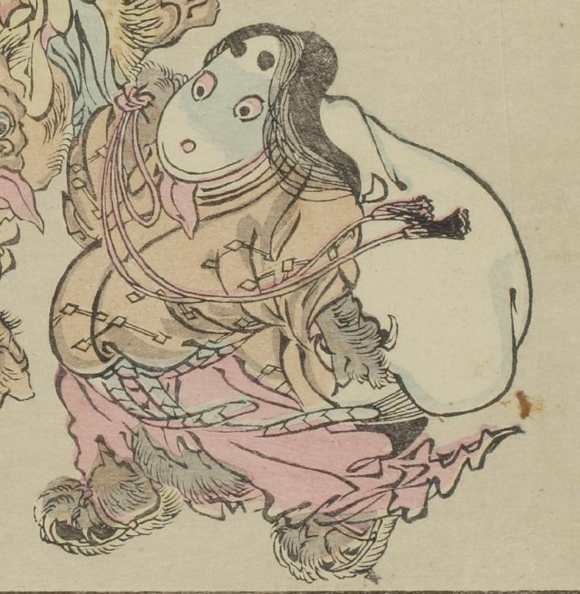

大きな袋を肩に担いだ女の化物。着物からのぞく手足は毛むくじゃらで獣のようである。顔は白く円形で、なにかの器物にもみえる。
出典：親書誌：U426_nichibunken_0093：暁斎百鬼画談；ギョウサイヒャッキガダン／日付：2006／資源識別子：U426_nichibunken_0093_0024_0000
Copyright (c)2010- International Research Center for Japanese Studies, Kyoto, Japan. All rights reserved.